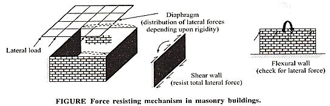
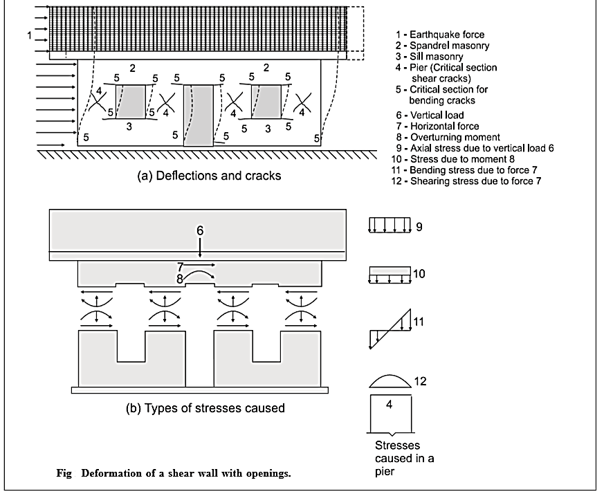
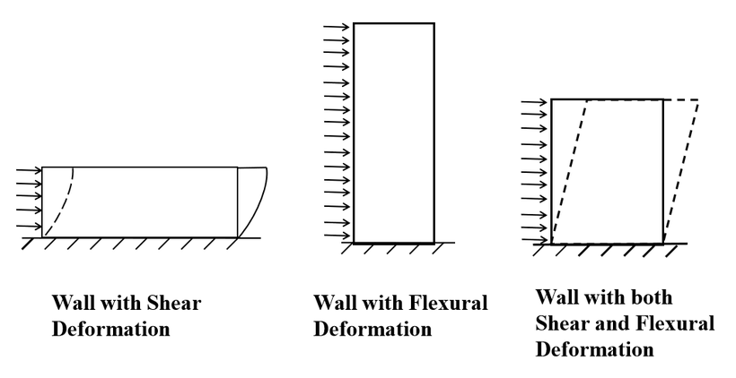
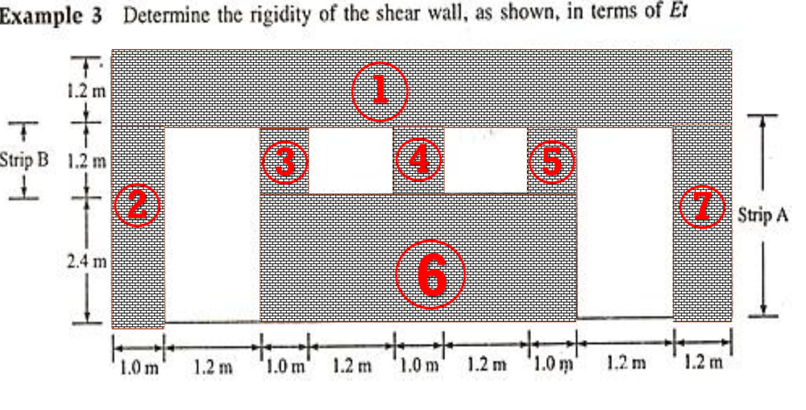
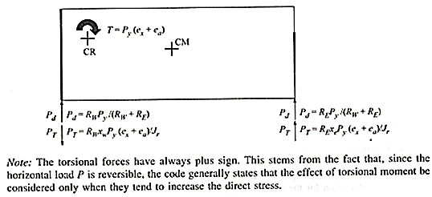
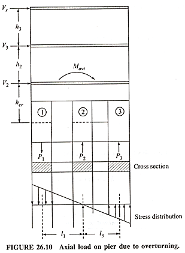
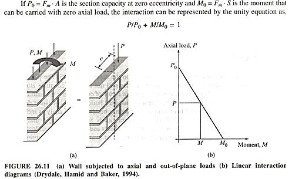

Syllabus & Marks Distribution
| Detail | Information |
|---|---|
| Course | Seismic Resistant Design of Masonry Structures — ENCE 367 (Elective I) |
| Chapter | 4 — Seismic Analysis and Design of Masonry Buildings |
| Teaching Hours | 12 hours |
| Marks Allocation | 18 marks — the largest chapter |
| Total Course Marks | 60 marks (final exam) · 45 teaching hours |
| Weight | 30% of the final paper |
| Codes required | IS 1905–1987, IS 1893 (Part 1), NBC 105: 2020, IS 875 |
Syllabus Topics
- 4.1 Principle of seismic design of masonry structures
- 4.2 Historical perspective on seismic design of masonry structures
- 4.3 Code provisions and calculation of seismic forces
- 4.4 Determination and distribution of lateral forces based on flexibility of diaphragms (IS 1893: 2016 or NBC 105: 2020)
- 4.5 Rigidity of shear wall considering opening effects
- 4.6 Direct and torsional shear force in shear walls
- 4.7 Increase in axial load in piers due to overturning
- 4.8 Wall subjected to out-of-plane bending
- 4.9 Stability check of flexural wall for out-of-plane forces
- 4.10 Additional forces due to arching action (rigid and gapped arching)
Importance & Frequently Asked Topics VERY HIGH
This chapter is where the numericals live. Across the last six papers it accounts for 13 questions and over 150 marks in the 80-mark format — typically two to three 12–14 mark design numericals per paper. Together with Chapter 3 it carries 32 of the 60 final marks. Chapters 1–3 can be revised; this one has to be practised.
Marks Distribution by Each Exam
| Exam | Marks | Questions asked |
|---|---|---|
| 2075 Chaitra | 10 | Q1 — design criteria and design steps for masonry shear walls |
| 2076 Chaitra | 24 | Q1b — lintel band design (ah = 0.36); Q4a — seismic coefficient and storey forces, Kathmandu |
| 2078 Bhadra | 28 | Q5 — exterior wall for wind (transverse); Q6 — shear wall, 0.3 g |
| 2079 Bhadra | 12 | Q5b — shear wall 4.2 × 3.3 m, 0.1 g |
| 2080 Bhadra | 30 | Q3b — wall for wind 850 N/m²; Q4a — floor level shear at Surkhet; Q4b — lintel band load |
| 2081 Bhadra | 24 | Q4b — shear wall 4 × 3 m, 0.2 g; Q5b — centre of mass, centre of stiffness and eccentricities |
Frequently Asked Topics
| Topic | Times Asked | Frequency |
|---|---|---|
| Design of a shear wall for in-plane seismic force | 4 | |
| Design of a wall for out-of-plane (wind/transverse) load | 3 | |
| Seismic coefficient, base shear and storey force distribution | 2 | |
| Lintel / horizontal band design and band load | 2 | |
| Centre of mass, centre of rigidity and eccentricity | 1 | |
| Design criteria and steps for shear walls (theory) | 1 | |
| Rigidity with openings, torsional shear, overturning | 0 direct |
Topic-wise Importance & Exam Tips
| Topic | Importance | Key Points / Exam Tips |
|---|---|---|
| Shear wall design (in-plane) | High | The single most repeated numerical — four papers running. Memorise the 10-step sequence of §4.6.6. The lateral force is almost always given as a fraction of g times the wall self-weight. |
| Out-of-plane / transverse wall design | High | Use M = pH²/10 for a wall anchored top and bottom. Check compressive stress at the base and tensile stress at mid-height. Remember the 25% overstress allowance for wind/seismic. |
| Base shear & storey force distribution | High | VB = AhW with Ah = (Z/2)(I/R)(Sa/g); distribute as Qi = VB Wihi²/ΣWjhj². Do not forget: roof live load is excluded from seismic weight. |
| Centre of mass & centre of rigidity | High | Tabulate. CM from weights, CR from rigidities. Then e = X̄m − X̄r, and add 5% accidental eccentricity. |
| Direct and torsional shear | High | Vd in proportion to R; Vt = R d / ΣRd² × T. Torsional shear is taken as always additive (plus sign) because the load reverses. |
| Rigidity of a shear wall with openings | Medium | Piers in a row (side by side) → add rigidities; piers stacked one above another → add deflections. Use the solid-wall-minus-strip method. |
| Increase in axial load due to overturning | Medium | Povt = Movt liAi/In — treat the row of piers as one composite section. |
| Design criteria / steps (theory) | Medium | 2075 asked this as pure theory for 10 marks. Give the four force actions (vertical, shear, bending, overturning) plus the three design checks. |
| Arching action | Low | Not yet asked but explicitly in the new syllabus. Two distinct things: arching over an opening (reduces lintel load) and out-of-plane rigid/gapped arching (increases wall capacity). |
4.1 Principle of Seismic Design of Masonry Structures 2075 Chaitra, Q1
PAST EXAM QUESTIONS ON THIS TOPIC:
- Discuss the design criteria and design steps in the design of masonry shear walls. [10] (2075 Chaitra, Q1)
4.1.1 The force resisting mechanism
In a load-bearing masonry building the walls that carry the gravity loads also act as the shear walls that resist the lateral load. There is no separate lateral-load-resisting system. The mechanism is:
Meanwhile the flexural walls (walls perpendicular to the force) must be separately checked for the out-of-plane lateral force acting on them.

4.1.2 Design principles
- Working (allowable) stress design. IS 1905 designs masonry so that the actual stress stays within a permissible stress: fc ≤ fper = fbkskakp (Chapter 2, §2.6).
- No tension is permitted. The wall is designed as a vertical cantilever for compression and shear; the resultant should stay within the middle third (e ≤ t/6).
- Strength and ductility, and structural integrity — the two aims of every seismic code (Chapter 3, §3.1.3); the objective is prevention of collapse, not prevention of damage.
- Both principal directions must be checked independently, and the force reverses.
- Increase in permissible stress: permissible stresses and loads may be increased by one-third when wind or earthquake is included — equivalently, use 0.75× the load combination and the full permissible stress.
- The compressive stress may additionally exceed the permissible value by 25% when the excess is solely due to bending.
4.1.3 Design criteria for a masonry shear wall 2075 Chaitra, Q1
A shear wall carries a horizontal load acting parallel to its own plane, arising from:
- Seismic loading, horizontal and in the plane of the wall;
- Wind loading on the exterior (facade) wall, transmitted through the diaphragm to the cross wall that supports it.
The cross wall and the stiffening wall act as shear walls; in an earthquake the cross wall is what transmits the seismic load down to the foundation. The shear wall must be designed to resist four actions:
| # | Action | Effect |
|---|---|---|
| 1 | Vertical load | Direct compressive stress fca = W/A |
| 2 | Shear force | Shear between adjacent courses, resisted by the horizontal mortar bed joint or by diagonal tension in the masonry |
| 3 | Bending moment | Flexural stress fcb = M/Z, maximum at the base of the wall |
| 4 | Overturning moment | Tends to rotate the wall about its toe; resisted by the stabilising moment of the vertical load |
The three design checks
τ = FA ≤ τper = τa + μ fcaFS = 0.1 + fd6 (≤ 0.5 N/mm²)
τa = allowable shear stress on plain mortar, usually 0.1 N/mm²; μ = coefficient of friction; FS = factor of safety; μ/FS is usually taken as 1/6; fca (= fd) is the compressive stress due to the axial (dead) load. IS 1905 cl. 5.4.3.
2. Maximum compressive stress
fc = fca + fcb ≤ 1.25 × fper (the 25% increase applies only where the excess is due to bending)
3. Maximum tensile stress
ft = fcb − fca ≤ fat (masonry can resist only marginal tension — ideally ft should be zero or negative)
Bending moment Mf = Σ Fi hi (Fi = i-th lateral force at height hi)
Flexural stress fcb = MfZ = Mf · (L/2)I = 6 Mft L² Z = t L²6
Overturning moment at the toe Mo = Σ Fi hi
Stabilising moment at the toe Ms = Σ Wi · L2 Factor of safety against overturning = Ms/Mo (should be ≥ 1.5–2)

4.2 Historical Perspective on Seismic Design of Masonry Structures
| Period | Development |
|---|---|
| Antiquity – 19th century | Empirical “rules of thumb” only. Wall thickness fixed as a fraction of height or number of storeys; stability judged by the middle-third rule and by experience. Earthquake resistance came incidentally from mass, symmetry, small openings and timber lacing. |
| 1755 Lisbon | After the earthquake the Portuguese introduced the gaiola pombalina — a braced timber cage inside masonry walls: the first deliberate, codified anti-seismic construction system. |
| 1783 Calabria, 1908 Messina | Italian regulations introduced the casa baraccata timber-frame system and, after Messina, the first equivalent static lateral force coefficient (a fraction of the building weight applied horizontally). |
| 1920s–1930s | Japan (1924) and the USA (Field Act, 1933, after Long Beach) adopt seismic coefficient design. Unreinforced masonry is progressively banned for schools and public buildings in California. |
| 1934 Nepal–Bihar | The first systematic damage survey in this region; led to reconstruction guidance in the Kathmandu Valley. |
| 1960s–1970s | Move from empirical to engineered masonry: allowable stress design codified (IS 1905 first published 1961, revised 1969, 1980, 1987). Reinforced masonry and confined masonry spread. |
| 1962 – 1993 India | IS 1893 (criteria for earthquake resistant design), IS 4326 (earthquake resistant design and construction of buildings) and IS 13828 (low-strength masonry) codify bands, vertical bars and opening limits. |
| 1994 Nepal | Nepal National Building Code published — NBC 105 (seismic design), NBC 109 (masonry), NBC 202 (mandatory rules of thumb for load-bearing masonry), NBC 203 (low-strength masonry), NBC 204 (earthen buildings). NBC 105 revised 2020. |
| 1990s–present | Shift towards performance-based and displacement-based design; capacity design concepts; refined out-of-plane and diaphragm-flexibility models; post-2015 large-scale reconstruction in Nepal using banded and confined masonry. |
4.3 Code Provisions and Calculation of Seismic Forces 2076 Chaitra, Q4a2080 Bhadra, Q4a
PAST EXAM QUESTIONS ON THIS TOPIC:
- Calculate the floor level shear and earthquake force for a double storey health post building located at Surkhet… [14] (2080 Bhadra, Q4a)
- Determine the seismic coefficient and storey seismic forces for a single room double storey health post building… located at Kathmandu. [12] (2076 Chaitra, Q4a)
4.3.1 Methods of seismic analysis
| Method | Use |
|---|---|
| Seismic coefficient (equivalent static / equivalent lateral force) method | The method for masonry buildings. Regular, low-rise, first-mode dominated structures. |
| Response spectrum (modal) method | Taller or moderately irregular buildings where higher modes matter. |
| Time history method | Important or very irregular structures; step-by-step solution for a real accelerogram. |
4.3.2 Seismic weight
• The full dead load of slabs, walls, finishes and permanent fixtures.
• The appropriate percentage of imposed (live) load per IS 1893 cl. 7.3.1 / Table 8 — commonly 25% for LL ≤ 3 kN/m² and 50% for LL > 3 kN/m².
• Live load on the roof need NOT be considered at all (IS 1893 cl. 7.3.2). This is the most common mistake in the exam.
• Walls are lumped half to the floor above and half to the floor below; the bottom half of the ground-storey wall goes to the foundation and is not part of the seismic weight of storey 1.
4.3.3 Design base shear
Ah = Z2 · IR · Sag [cl. 6.4.2]
| Term | Meaning and typical value |
|---|---|
| Z — zone factor | Regional seismicity, IS 1893 Table 2. Z = 0.36 for Zone V (all of Nepal is comparable to Zone V). The Table gives Z for the Maximum Considered Earthquake; dividing by 2 converts it to the Design Basis Earthquake, which is why the formula contains Z/2 — this makes the design economical. |
| I — importance factor | IS 1893 Table 6. Depends on the functional use of the structure, the hazardous consequences of its failure, post-earthquake functional need, historical value and economic importance. I = 1.0 for ordinary buildings, 1.5 for important buildings (hospitals, health posts, schools, monuments). |
| R — response reduction factor | IS 1893 Table 7. Depends on the perceived seismic damage performance of the structure, characterised by its ductile or brittle deformations. R = 1.5–3 for unreinforced masonry (low ductility). The ratio I/R shall not be greater than 1.0. |
| Sa/g — spectral acceleration coefficient | Read from the design response spectrum (Chapter 1, Fig. 1.19) for the fundamental period T and the soil type. For medium soil: 1 + 15T for 0 ≤ T ≤ 0.10; 2.50 for 0.10 ≤ T ≤ 0.55; 1.36/T for 0.55 ≤ T ≤ 4.00. A low masonry building almost always falls on the 2.50 plateau. |
Moment-resisting frame with brick infill: Ta = 0.09 h√d (h = height in m, d = base dimension in the direction considered)
Moment-resisting frame without infill: Ta = 0.075 h0.75 (RC), 0.085 h0.75 (steel)
A load-bearing masonry building is treated like the infilled case; T is short (typically 0.1–0.3 s), so Sa/g = 2.5.
NBC 105: 2020 (the Nepali alternative)
Cd(T1) = C(T1) · IeRμ · Ωu C(T1) = Ch(T1) · Z · Ie
Ch(T1) = spectral shape factor (soil type A/B/C/D); Z = seismic zoning factor (0.35 for Kathmandu, 0.25–0.40 across Nepal); Ie = importance factor (1.0 / 1.25 / 1.5); Rμ = ductility factor; Ωu = overstrength factor.
NBC 105 also allows the simpler approach of NBC 202 — mandatory rules of thumb — for ordinary one- to three-storey load-bearing masonry buildings, which requires no calculation at all, only compliance with prescriptive detailing.
Load combinations (working stress)
With wind or earthquake the permissible stress may be increased by 1/3; equivalently, use 0.75 × the combination with the full permissible stress. Reversal of force must be considered.
(For limit state work IS 1893 gives 1.5(DL+IL); 1.2(DL+IL±EL); 1.5(DL±EL); 0.9DL±1.5EL.)
4.3.4 Vertical distribution of base shear
Qi = design lateral force at floor i; Wi = seismic weight of floor i; hi = height of floor i measured from the base.
The storey shear at any level is the sum of all the floor forces above it: Vi = Σj ≥ i Qj — so the shear is largest at the base (= VB) and smallest at the roof.
- Compute the seismic weight of each floor: slab + finishes + half the wall above + half the wall below + n% of the floor live load. Roof: slab + finishes + half the wall below, no live load.
- Total W = ΣWi.
- Find Ta (or note that the building is stiff, so Sa/g = 2.5).
- Pick Z, I, R for the location and occupancy → compute Ah.
- VB = AhW.
- Tabulate Wi, hi, hi2, Wihi2, and ΣWjhj2.
- Qi for each floor, then the storey shear Vi by accumulating downwards.
- Present the answer as a table — markers award marks per row.
4.3.5 The six-step lateral load analysis procedure
This is the backbone of the whole chapter. Syllabus items 4.4 to 4.9 are exactly these steps:
- Determination of the lateral load based on IS 1893 (Part 1) or NBC 105 — base shear and its vertical distribution. (§4.3)
- Distribution of the lateral force to the walls on the basis of the flexibility of the diaphragm. (§4.4)
- Determination of the rigidity of each shear wall, considering the openings. (§4.5)
- Determination of the direct shear force and the torsional shear force in each shear wall. (§4.6)
- Determination of the increase in axial load in the piers due to overturning. (§4.7)
- Check the stability of the flexural wall for out-of-plane forces. (§4.8, §4.9)
4.4 Determination and Distribution of Lateral Forces Based on Flexibility of Diaphragms
4.4.1 Classifying the diaphragm
• RIGID — the midpoint in-plane displacement of the diaphragm under lateral load is less than twice the average displacement of its end supports (the walls).
• FLEXIBLE — the midpoint displacement is more than twice the average end displacement.
| Basis | Rigid diaphragm | Flexible diaphragm |
|---|---|---|
| Typical construction | Cast-in-situ RC slab; precast planks with structural topping | Timber joists with plank flooring; CGI sheet roof; unbraced trusses; jack-arch floors |
| Distribution of storey shear | In proportion to the relative rigidity (stiffness) of the walls: Vi = V × Ri/ΣR | In proportion to the tributary area (tributary width) of each wall — the diaphragm behaves as a series of simply-supported beams spanning between walls |
| Torsion | Transmitted — torsional shear must be computed (§4.6) | Not transmitted — no torsional analysis is possible or required |
| Analogy | A rigid plate on springs of different stiffness | A flexible beam on rigid supports |
| Out-of-plane support | Provides real support to the top of the transverse wall | Very little — the wall spans the full storey height unaided |
4.4.2 Worked comparison
Take a single-storey building with a storey shear V, resisted by three parallel walls A, B and C at spacings such that the tributary widths are L/4, L/2 and L/4, and with rigidities RA, RB, RC.
| Wall | Flexible diaphragm — by tributary width | Rigid diaphragm — by rigidity |
|---|---|---|
| A (end) | V/4 | V · RA/(RA+RB+RC) |
| B (centre) | V/2 | V · RB/(RA+RB+RC) |
| C (end) | V/4 | V · RC/(RA+RB+RC) |
The two answers can differ enormously. A long, stiff wall attracts most of the force under a rigid diaphragm even if it has a small tributary area — and a short, flexible wall with a large tributary area is overloaded under a flexible diaphragm. Always state which assumption you are using. Where the classification is genuinely uncertain, the conservative approach is to envelope both.
4.5 Rigidity of Shear Wall Considering Opening Effects
4.5.1 Deflection of a pier under in-plane load
A masonry pier deflects under horizontal load by a combination of flexural (bending) and shear deformation. Both must be included, because for masonry piers the shear component is far from negligible.

Δc = Δflexure + Δshear = P h³3 Em I + 1.2 P hA Gm → Δc = PEm t [ 4(h/d)³ + 3(h/d) ]
Fixed pier (restrained against rotation at both top and base):
Δf = P h³12 Em I + 1.2 P hA Gm → Δf = PEm t [ (h/d)³ + 3(h/d) ]
with I = t d³/12, A = d t, Gm = 0.4 Em, h = height of the pier, d (or L) = length of the pier, t = thickness.
Rc = Em t4(h/d)³ + 3(h/d) (cantilever) Rf = Em t(h/d)³ + 3(h/d) (fixed)
In practice only relative rigidity matters, so Emt is common to all piers of the same material and thickness and may simply be carried along as “Et”.
Effect of aspect ratio h/d
| Aspect ratio h/d | Which deformation dominates | Practical consequence |
|---|---|---|
| h/d < 0.25 (very squat) | Almost entirely shear | Rigidity based on shear deformation alone is reasonably accurate. |
| 0.25 ≤ h/d ≤ 4 (intermediate — nearly all real piers) | Both components matter | Both terms must be kept. |
| h/d > 4 (slender) | Almost entirely flexure | Rigidity based on flexural stiffness alone is relatively accurate. |
Because the ratio changes over the height of a building, the relative rigidity of a wall also varies from storey to storey.
4.5.2 Combining piers — the two rules
R = R1 + R2 + R3 + …
Piers stacked one above another (VERTICAL combination) — they carry the same force and their deflections add, so ADD THE DEFLECTIONS:
Δ = Δ1 + Δ2 + Δ3 + … → R = 11/R1 + 1/R2 + 1/R3
4.5.3 Method for a wall with openings — “solid wall minus strip”
Openings destroy the coupling between the wall segments, so a perforated wall must be treated as a system of piers. The standard procedure (Drysdale, Hamid & Baker) is:
- Calculate the deflection of the solid wall as a cantilever over its full height, Δsolid(c).
- Subtract the deflection of the horizontal strip that contains the openings, computed as a cantilever over the strip height, Δstrip(c). This removes that band of wall.
- Add back the deflection of the piers within that strip, computed as fixed piers and combined horizontally (rigidities added), Δpiers(f).
- Repeat for every strip of openings.
- Invert the total deflection to get the wall rigidity: Rwall = 1/Δwall.
Piers inside a strip are taken as fixed because the spandrel above and the sill/floor below restrain their rotation; the overall wall is taken as a cantilever.
Note on accuracy: the method ignores the rotations that occur at the tops of the individual segments and therefore overestimates the rigidity of the wall; it is also strictly valid only for load applied at the top level.

Worked Example — rigidity of the shear wall of Fig. 4.4, in terms of Et
Overall wall 10.0 m long × 4.8 m high (1.2 m spandrel + 3.6 m opening zone). Strip A = the full-height opening strip (3.6 m); strip B = the upper opening band (1.2 m). Subscript (c) = cantilever, subscript (f) = fixed.
1 Solid wall and strip A — cantilever, so use 4(h/d)³ + 3(h/d)
2 Piers 3, 4, 5 — fixed, side by side, so ADD their rigidities
3 Sub-assembly 3,4,5,6 — solid minus strip B plus the piers
4 End piers 2 and 7 — fixed
5 Combine piers 2, 3-4-5-6 and 7 — side by side, so ADD rigidities
6 Assemble the whole wall
Note the alternation that this example is designed to teach: elements stacked vertically (solid − strip + piers) have their deflections added, while elements standing side by side (piers 3, 4, 5, or piers 2 + 3456 + 7) have their rigidities added. Getting this the wrong way round is the commonest error in the whole method.
4.5.4 Distribution of force among the piers
Vi = V · RiΣ R — the stiffest pier attracts the most force, which is why a short, squat pier next to a slender one is the first to crack.
4.6 Direct and Torsional Shear Force in Shear Walls 2081 Bhadra, Q4b2081 Bhadra, Q5b2079 Bhadra, Q5b2078 Bhadra, Q6
PAST EXAM QUESTIONS ON THIS TOPIC:
- Calculate the centre of mass, centre of stiffness and eccentricities for the given single-storey masonry building. [12] (2081 Bhadra, Q5b)
- Design a shear wall 4 m long and 3 m high to resist a horizontal earthquake force in its plane… seismic load 0.2 g uniformly distributed across the entire height of the wall. [12] (2081 Bhadra, Q4b)
- Design a shear wall 4.2 m long and 3.3 m high… earthquake acceleration = 0.1 g. [12] (2079 Bhadra, Q5b)
- Design a shear wall 5 m long and 4 m high… 0.3 g… Neglect load from floor. [14] (2078 Bhadra, Q6)
4.6.1 Centre of mass (CM) 2081 Bhadra, Q5b
X̄m = Σ Wi xiΣ Wi Ȳm = Σ Wi yiΣ Wi
where Wi are the weights of the roof/floor slab and of each wall, and xi, yi are the coordinates of their own centroids. Typically
ΣW = WRoof + WN + WS + WE + WW.
Practical points. The slab acts at the centre of the plan. A wall running in the x-direction acts at the mid-length of the building in x, and at its own y-coordinate. Only half the wall height belongs to the storey being considered (the other half goes to the storey below).
4.6.2 Centre of rigidity (CR) / centre of stiffness
X̄r = Σ Ry xΣ Ry Ȳr = Σ Rx yΣ Rx
Rx = in-plane rigidity of a wall running in the x-direction; Ry = in-plane rigidity of a wall running in the y-direction.
4.6.3 Torsional eccentricity
To this calculated (static) eccentricity a minimum accidental eccentricity must be added to allow for unmodelled variation of mass and stiffness and for rotational ground motion:
ea = 0.05 × (plan dimension perpendicular to the direction of the force)
Design eccentricity ed = ecalculated + ea
Example: with ey = 4.06 − 1.60 = 2.46 m and a 10 m plan dimension, ea = 0.05 × 10 = 0.50 m, so the total eccentricity is 2.96 m.
Codal limit: the distance between the storey centre of mass and the storey centre of rigidity should be less than about 20–30% of the plan dimension in either direction; beyond that the building is torsionally irregular and needs a dynamic analysis or a change of layout.
4.6.4 Torsional moment and torsional shear
Direct shear in a wall parallel to the applied force:
Pd = Py · RiΣ R — e.g. Pd = RWPy/(RW + RE)
Torsional shear in any wall (parallel or perpendicular to the force):
PT = Ri diJr · T = Ri diΣ(Rxdy²) + Σ(Rydx²) · P (e + ea)
di = perpendicular distance of the wall from the centre of rigidity; Jr = polar moment of rigidity = ΣR d² taken over all walls in both directions.
Total shear in the wall P = Pd + PT

4.6.5 Worked pattern — centre of mass and centre of rigidity
| Item | Weight (kN) | X (m) | Y (m) | WX (kN·m) | WY (kN·m) |
|---|---|---|---|---|---|
| Roof slab | 450 | 7.5 | 5.0 | 3375 | 2250 |
| N-wall | 125 | 7.5 | 10.0 | 937.5 | 1250 |
| S-wall | 375 | 7.5 | 0.0 | 2812.5 | 0 |
| E-wall | 125 | 15.0 | 5.0 | 1875 | 625 |
| W-wall | 250 | 0.0 | 5.0 | 0 | 1250 |
| Σ | 1325 | 9000 | 5375 |
With, say, RN = 0.16 and RS = 0.84 and B = 10 m:
Ȳr = (RN×B + RS×0)/(RN+RS) = (0.16×10)/(1.00) = 1.60 m
→ ey = 4.06 − 1.60 = 2.46 m; ea = 0.05×10 = 0.50 m; total ey = 2.96 m
Similarly if X̄r = 3.69 m and L = 15 m: ex = 6.79 − 3.69 = 3.10 m; ea = 0.75 m; total ex = 3.85 m
The forces then follow, tabulating R, d, Rd and Rd² for every wall:
| Wall | Rx | dy (m) | Rxdy | Rxdy² | Direct shear (kN) | Torsional shear (kN) | Total (kN) |
|---|---|---|---|---|---|---|---|
| N-wall | 0.16 | 8.4 | 1.344 | 11.28 | 48 | +89 | 137 |
| S-wall | 0.84 | 1.6 | 1.344 | 2.15 | 252 | −89 → taken as +89 | 252 |
| Σ R d² = Jr = | 13.40 | ||||||
The S-wall gets the same magnitude with the opposite sign; because the load reverses, it is taken as +89 there too when checking, but the governing total for the S-wall is its (much larger) direct shear.
4.6.6 Design of a shear wall for in-plane seismic force — the 10-step method 2078 Q62079 Q5b2081 Q4b
- Assume a wall thickness t (usually 230 mm, one brick).
- Section properties: A = L × t Z = tL²/6.
- Self weight W = L × H × t × γ (γ = 20 kN/m³), plus any floor/roof load if the question gives it.
- Lateral force F = (seismic coefficient) × W — e.g. F = 0.2 W for 0.2 g.
- Shear check: τ = F/A ≤ τper = 0.1 + fd/6, with fd = W/A.
- Axial compressive stress fca = W/A.
- Bending moment. For a load uniformly distributed over the height, the resultant acts at mid-height, so M = F × H/2. (If the force is concentrated at roof level, M = F × H.)
- Flexural stress fcb = M/Z.
- Slenderness and eccentricity: teff = t, SR = heff/teff; equivalent eccentricity e = M/W; eccentricity ratio e/L. Read ks from IS 1905 Table 9 (interpolating), pick the unit strength and mortar grade, read fb from Table 8.
- Compare:
- axial: fca ≤ fac = ksfb
- combined: fca + fcb ≤ facb = 1.25 ksfb
- tension: ft = fcb − fca ≤ fat
A = 4200×230 = 9.66×105 mm²; Z = 230×4200²/6 = 6.76×108 mm³
W = 4.2×3.3×0.23×20 = 63.76 kN; F = 0.1×63.76 = 6.37 kN
τ = 6370/9.66×105 = 0.006 N/mm² < τper = 0.1 + (63760/9.66×105)/6 = 0.11 N/mm² ✓
fca = 63760/9.66×105 = 0.066 N/mm²
M = 6370×3300/2 = 10.51×106 N·mm; fcb = M/Z = 0.015 N/mm²
SR = 3300/230 = 14.35; e = M/W = 10.51×106/63760 = 165 mm; e/L = 165/4200 = 1/25 ≈ 1/24
From Table 9 (SR 14.35, e/t = 1/24): ks = 0.76 − (0.76−0.71)(14.35−14)/(16−14) = 0.751
Take unit 5 N/mm² with M1 mortar → fb = 0.50 N/mm² (Table 8)
fac = 0.751×0.50 = 0.375 > 0.066 ✓ facb = 1.25×0.375 = 0.469 > 0.081 ✓ → SAFE.
4.7 Increase in Axial Load in Piers due to Overturning
The storey shear applied above a level produces an overturning moment at that level. In a perforated wall this moment is resisted by the row of piers acting together as one composite section: the piers on the leeward side gain axial compression and those on the windward side lose it (and may go into tension).
Movt = Σ Vj hj (sum of every storey force above the level, times its height above that level)
Increase in axial load on an individual pier:
Povt = Movt · li AiIn
Ai = cross-sectional area of the pier in question
li = distance from the centroid of the net wall section in the storey to the centroid of that pier, l̄ = ΣliAi / ΣAi
In = moment of inertia of the net wall section = Σ(Aili² + Ii), with Ii = t di³/12 the pier's own second moment of area

Worked pattern
| Pier | Ai (m²) | Distance from left edge (m) | Ail (m³) |
|---|---|---|---|
| 1 | 0.50 | 1.0 | 0.500 |
| 2 | 0.75 | 4.5 | 3.375 |
| 3 | 0.75 | 8.5 | 6.375 |
| Σ | 2.00 | 10.25 |
Centroid of the net section from the left edge = 10.25 / 2.00 = 5.125 m. Then, taking li as the distance of each pier from that centroid:
| Pier | Ai (m²) | li (m) | Aili² (m⁴) | Ii = td³/12 (m⁴) | In = Aili² + Ii | Aili | Povt (kN) |
|---|---|---|---|---|---|---|---|
| 1 | 0.50 | 4.125 | 8.50 | 0.167 | 8.667 | 2.06 | 365.07 |
| 2 | 0.75 | 0.625 | 0.290 | 0.562 | 0.852 | 0.47 | 83.29 |
| 3 | 0.75 | 3.375 | 8.54 | 0.562 | 9.102 | 2.53 | 448.36 |
| Σ In = | 18.621 | ||||||
4.8 Wall Subjected to Out-of-Plane Bending 2078 Bhadra, Q52080 Bhadra, Q3b
PAST EXAM QUESTIONS ON THIS TOPIC:
- Design a wall of a basketball sports building of height 6 m. Roof 150 mm thick RCC slab, wind load 850 N/m². Wall connected by metal anchor with the roof structure. [10] (2080 Bhadra, Q3b)
- Design an exterior wall of a single storey workshop of height 4 m. Load on wall: 30 kN/m from roof and wind load 750 N/m². Wall connected by metal anchor with roof structure. [14] (2078 Bhadra, Q5)
4.8.1 The action
A wall loaded perpendicular to its plane by wind or by out-of-plane seismic inertia behaves as a vertical strip spanning between the floor and the roof. The lateral pressure produces a bending moment, which combines with the vertical load to give a resultant acting at an eccentricity e = M/W.
M = p H²10 per metre run (p = lateral pressure in N/m², H = wall height in m)
For a simply-supported strip the value would be pH²/8 and for a propped cantilever pH²/8 at the base; IS 1905/SP 20 practice for a wall partially constrained at both ends is pH²/10, with the moment taken as critical at the base and at mid-height. If the wall is free at the top (parapet), use the cantilever value pH²/2.
Section properties per metre run: A = 1000 t mm² Z = b t²6 = 1000 t²6 mm³
4.8.2 The two critical checks
fc = WA + MZ ≤ 1.25 × ks fb
At MID-HEIGHT — tension governs (only half the wall self-weight acts, so the stabilising precompression is least):
ft = MZ − WA ≤ fat (and ideally ≤ 0, i.e. no tension at all)
4.8.3 Nominal out-of-plane load capacity
Fa = 0.25 f′m [ 1 − (h/140r)² ] for h/r ≤ 99
Fa = 0.25 f′m (70r/h)² for h/r > 99
h/r = slenderness ratio of the wall (r = radius of gyration), f′m = design compressive strength of masonry.
Nominal allowable load carrying capacity in out-of-plane, Pn:
Pn = f′m b t [ 1/(1 + 6e/t) ] for 0 < e < t/6
Pn = b t f′m · 34 [ 1 − 2e/t ] for e > t/6
4.8.4 Axial force–moment interaction
A wall carrying axial load and out-of-plane moment is checked on an interaction diagram. If P0 = Fm·A is the section capacity at zero eccentricity, and M0 = Fm·S is the moment that can be carried at zero axial load, then the linear interaction is:

4.8.5 Worked pattern — transverse (wind) wall design
- Assume t (say 230 mm). Take a 1 m run of wall.
- Vertical load W = roof load + self weight = wroof + t×γ×H.
- A = 1000t mm²; Z = 1000t²/6 mm³.
- M = pH²/10 (in N·mm per metre run).
- Compressive stress at the base fc = W/A + M/Z.
- Tensile stress at mid-height ft = M/Z − Wmid/A, using only the load present at mid-height.
- SR = heff/teff; e = M/W; e/t → ks from Table 9.
- Choose unit and mortar → fb from Table 8; fper = ksfb (×1.25 where the excess is due to bending, and the whole thing may be raised by 1/3 for wind/seismic).
- Verify fc ≤ permissible and ft ≤ fat. If tension is excessive, increase t, add piers/buttresses (reducing the span), or provide vertical reinforcement.
Self weight = 0.23×20×3.5 = 16.10 kN/m → W = 46.10 kN/m
A = 230×1000 = 230 000 mm²; Z = 1000×230²/6 = 8.817×106 mm³
M = 1000×3.5²/10 = 1225 N·m = 1.225×106 N·mm per metre run
fc = 46100/230000 + 1.225×106/8.817×106 = 0.20 + 0.14 = 0.34 N/mm² (compression at the base)
ft = M/Z − W/A = 0.14 − 0.165 = −0.025 N/mm² — still compressive, so no tension develops. ✓
4.9 Stability Check of a Flexural Wall for Out-of-Plane Forces
Stability is a separate question from stress: even if the stresses are acceptable, a slender wall can become unstable. The checks are:
| # | Check | Criterion |
|---|---|---|
| 1 | Slenderness | SR = heff/teff ≤ the limiting value: 27 for load-bearing walls in cement mortar, 20/13 in lime mortar, 30 for panel and curtain walls, 10 for free-standing walls and parapets. |
| 2 | Height-to-thickness (h/t) ratio | Governs out-of-plane rocking stability. Typical limits used in assessment: h/t ≤ 20 for a wall in a one-storey building, ≤ 14–16 for the top storey of a multi-storey building, ≤ 9 for a parapet. |
| 3 | No tension / middle third | e = M/W ≤ t/6 at every section, so the resultant stays within the middle third and the whole section remains in compression. |
| 4 | Overturning of the strip | Restoring moment from the vertical load, W·t/2, must exceed the overturning moment from the lateral pressure with a factor of safety (typically 1.5–2): FS = (W t/2) / (p H²/8) ≥ 1.5. |
| 5 | Support / anchorage | The assumed restraint must actually exist — metal anchors to the roof, bands, and cross walls at the assumed spacing. This is why the exam questions always say “the wall is tied with metal anchors”. |
| 6 | Span direction | Vertical span (floor to roof), horizontal span (between cross walls), or two-way — take the smaller effective span and use the corresponding moment coefficient. |
| 7 | Shear at the supports | The reaction pH/2 must be transferable to the diaphragm and the foundation through the anchors and bed joint. |
4.10 Additional Forces due to Arching Action (Rigid and Gapped Arching)
4.10.1 Arching over an opening (vertical load dispersion)
Conditions required for arching action to develop:
- The masonry units must have good shear strength and good bond, laid in proper masonry bond with a good quality mortar.
- The wall on both sides of the opening must be long enough to act as effective abutments for the arched masonry above — the horizontal thrust of the arch has to be provided by the shear resistance of the masonry at springing level on both sides. If an opening is too close to the end of a wall, the shear stress at the springing becomes excessive and the arch cannot form.
- There must be sufficient height of masonry above the opening to contain the arch.
Design consequence. The self weight of the wall and any load from the floor above the equilateral triangle over the opening are transferred to the sides; only the masonry within the triangle, plus any load applied below a horizontal plane 250 mm above the apex, is carried by the lintel. Two important limits follow:
- The increased axial stresses in the masonry beside the opening, associated with the arching action, shall not exceed the permissible stresses of IS 1905 cl. 5.4. This is the “additional force due to arching action” of the syllabus and the tutorial list.
- The bearing area of the lintel at each end must be sufficient to transfer the lintel reaction and the load due to arching action without exceeding the permissible stress. The bearing length shall be not less than 90 mm nor less than one-tenth of the span.
4.10.2 Out-of-plane arching — rigid and gapped
A second, quite different arching mechanism greatly increases the out-of-plane capacity of a wall panel that is built tightly between stiff supports — for example a wall panel between two RC floor slabs, or an infill panel within a stiff frame.
| Basis | Rigid arching | Gapped arching |
|---|---|---|
| Condition at the supports | The panel is built tight against supports that are effectively rigid and can take the thrust — no gap. | There is an initial gap g at the top of the panel — from shrinkage or creep of the slab above, construction tolerance, or a deliberate soft joint. |
| When the arch develops | Immediately, as soon as the panel starts to deflect. | Only after the panel has rotated enough to close the gap. |
| Effective lever arm | Full — approximately (t − a − δ), where a is the depth of the compressive contact zone at the hinge and δ the mid-height deflection. | Reduced to approximately (t − a − δ − g) — every millimetre of gap is taken straight off the lever arm. |
| Capacity | Highest. Classical three-hinge model: thrust T ≈ 0.85 f′m a b; arch moment March = T × (lever arm); uniform pressure q = 8 March/H². | Reduced, and falls rapidly as g grows. Beyond a certain gap the arch never forms and the wall reverts to simple (cracked flexural) behaviour. |
| Sensitivity | Sensitive to support stiffness — a flexible support spreads and the thrust relaxes. | Very sensitive to the gap, which is a construction-quality issue, not a design one. |
Quick Revision — Formula Sheet
- Base shear: VB = AhW, Ah = (Z/2)(I/R)(Sa/g); I/R ≤ 1.0. Masonry typical: 0.36/2 × 1/3 × 2.5 = 0.15.
- Seismic weight: DL + n%LL; roof live load excluded; walls split half up, half down.
- Storey force: Qi = VB Wihi² / ΣWjhj². Storey shear = sum of forces above.
- Diaphragm: rigid → distribute by rigidity, torsion transmitted; flexible → distribute by tributary area, no torsion. Rigid if midpoint deflection < 2× average end deflection.
- Pier rigidity: cantilever R = Et/[4(h/d)³+3(h/d)]; fixed R = Et/[(h/d)³+3(h/d)]. G = 0.4E.
- Combining piers: side by side → add R; stacked → add Δ.
- Wall with openings: Δwall = Δsolid(c) − Δstrip(c) + Δpiers(f).
- CM: X̄m = ΣWx/ΣW. CR: X̄r = ΣRyx/ΣRy (only walls in that direction).
- Eccentricity: e = X̄m − X̄r, plus 5% accidental. Limit ~20–30% of the plan dimension.
- Direct shear: Pd = P Ri/ΣR. Torsional shear: PT = T Ridi/ΣRd², with T = P(e + ea). Always added, never subtracted.
- Shear wall checks: τ = F/A ≤ 0.1 + fd/6; fca + fcb ≤ 1.25 ksfb; ft = fcb − fca ≤ fat.
- Moments: in-plane, UDL over height → M = FH/2; concentrated at roof → M = FH. Out-of-plane, anchored top and bottom → M = pH²/10; free at top → pH²/2.
- Section moduli: in-plane Z = tL²/6; out-of-plane Z = bt²/6.
- Overturning: Povt = Movt liAi/In, In = Σ(Aili² + Ii).
- Interaction: P/P0 + M/M0 = 1.
- Permissible stress may be raised by 1/3 for wind/EQ, and by 25% where the excess is due to bending.
- Arching over an opening: lintel carries only the 60° equilateral triangle; the rest thrusts into the abutments and raises their axial stress.
Chapter Summary
In a load-bearing masonry building the gravity walls are also the shear walls, so the lateral force is collected by the diaphragm, delivered to the walls parallel to the shaking, and taken to the foundation, while the walls perpendicular to the shaking are separately checked for out-of-plane force. Design is by working stress: the actual stress must stay within fper = fbkskakp, no tension is permitted, and the permissible stress may be raised by one third when wind or earthquake is included and by a further 25% where the excess is caused by bending. A shear wall must be designed for four actions — vertical load, shear force, bending moment and overturning moment — and checked for shear stress, maximum compressive stress and maximum tensile stress.
The seismic force follows from VB = AhW with Ah = (Z/2)(I/R)(Sa/g), the seismic weight being the dead load plus a percentage of the live load with the roof live load excluded, and is distributed up the height in proportion to Wihi². It is then shared among the walls according to the diaphragm: by relative rigidity if the diaphragm is rigid, by tributary area if it is flexible. Wall rigidity is computed from R = Et/[4(h/d)³+3(h/d)] for a cantilever pier or Et/[(h/d)³+3(h/d)] for a fixed pier, with piers side by side adding rigidities and piers stacked adding deflections; a wall with openings is analysed as the solid wall minus the opening strip plus the piers within it.
Because the centre of mass rarely coincides with the centre of rigidity, a torsional moment T = P(e + ea) acts in addition to the direct shear, and the resulting torsional shear T R d /ΣRd² is always taken as additive because the load reverses. The overturning moment increases the axial load on the leeward piers by MovtliAi/In and relieves the windward ones, which reduces their shear friction. Finally the flexural walls are designed for out-of-plane bending, with M = pH²/10 for a wall anchored top and bottom, compression checked at the base and tension at mid-height, stability checked through slenderness, h/t ratio, the middle-third rule and overturning; and arching action is accounted for both over openings, where it relieves the lintel but raises the axial stress in the abutments, and out-of-plane, where rigid arching between stiff supports greatly increases capacity but any construction gap reduces it.
All Past Exam Questions from this Chapter
CHAPTER 4 — COMPLETE LIST (CE 72502 / ENCE 367)
- Design a shear wall 4 m long and 3 m high to resist a horizontal earthquake force in its plane; seismic load 0.2 g uniformly distributed across the entire height. [12] (2081 Bhadra, Q4b) → §4.6.6
- Calculate the centre of mass, centre of stiffness and eccentricities for the given single-storey masonry building. [12] (2081 Bhadra, Q5b) → §4.6.1–4.6.3
- Calculate the floor level shear and earthquake force for a double storey health post building at Surkhet. [14] (2080 Bhadra, Q4a) → §4.3
- Calculate the load on the horizontal band at lintel level due to earthquake and dead load. [6] (2080 Bhadra, Q4b) → §4.3 + Chapter 2 §2.5.4
- Design a wall of a basketball sports building of height 6 m; wind load 850 N/m². [10] (2080 Bhadra, Q3b) → §4.8.5
- Design an exterior solid wall with pier of the ground floor of a double storey brick masonry building. [10] (2080 Bhadra, Q3a) → Chapter 2 §2.6.8
- Design a shear wall 4.2 m long and 3.3 m high; earthquake acceleration = 0.1 g. [12] (2079 Bhadra, Q5b) → §4.6.6
- Design a shear wall 5 m long and 4 m high; 0.3 g; neglect load from floor. [14] (2078 Bhadra, Q6) → §4.6.6
- Design an exterior wall of a single storey workshop of height 4 m; 30 kN/m from roof and wind load 750 N/m². [14] (2078 Bhadra, Q5) → §4.8.5
- Design an interior cavity wall of a two-storeyed building. [14] (2078 Bhadra, Q4) → Chapter 2 §2.6
- Determine the seismic coefficient and storey seismic forces for a single room double storey health post at Kathmandu. [12] (2076 Chaitra, Q4a) → §4.3
- Design a lintel band for a single room one storey building; design earthquake coefficient 0.36. [12] (2076 Chaitra, Q1b) → §4.3 + Chapter 2 §2.5.4
- Discuss the design criteria and design steps in the design of masonry shear walls. [10] (2075 Chaitra, Q1) → §4.1.3, §4.6.6
Practice tip: the four shear-wall questions (2078 Q6, 2079 Q5b, 2081 Q4b, plus the 2075 theory version) are the same problem with different numbers — only L, H and the seismic coefficient change. Work all three numerically until the 10-step sequence of §4.6.6 is automatic; that alone is worth 12–14 marks in almost every paper.